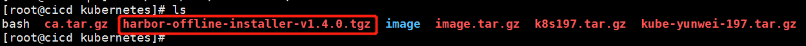

第4篇创建harbor私有镜像库
一、部署准备：
准备harbor软件包
在部署节点上：
#mv harbor-offline-installer-v1.4.0.tgz /opt/ && cd /opt
#tar zxvf harbor-offline-installer-v1.4.0.tgz
#cd harbor

二、修改配置文件：
harbor.cfg docker-compose.clair.yml
准备ca证书tar包，并解压移动到/data/harbor/cert目录下


找到如下参数，并修为如下配置：
hostname = reg.yunwei.edu
ui_url_protocol = https
ssl_cert = /data/harbor/cert/harbor.crt
ssl_cert_key = /data/harbor/cert/harbor.key
secretkey_path = /data/harbor
harbor_admin_password = admin
ssl_cert = /data/harbor/cert/harbor.crt
ssl_cert_key = /data/harbor/cert/harbor.key
以上为ca证书名称，必须与实际文件同名
secretkey_path = /data/harbor 为ca证书目录
docker-compose.clair.yml
找到如下参数，并修为如下配置：
/data/harbor/clair-db:/var/lib/postgresql/data:z
docker-compose.notary.yml
找到如下参数，并修为如下配置：
/data/harbor/notary-db:/var/lib/mysql:z
docker-compose.yml
找到如下参数，并修为如下配置：
/data/harbor/:/var/log/docker/:z
/data/harbor/registry:/storage:z
/data/harbor/database:/var/lib/mysql:z
/data/harbor/config/:/etc/adminserver/config/:z
/data/harbor/secretkey:/etc/adminserver/key:z
/data/harbor/:/data/:z
/data/harbor/secretkey:/etc/ui/key:z
/data/harbor/ca_download/:/etc/ui/ca/:z
/data/harbor/psc/:/etc/ui/token/:z
/data/harbor/job_logs:/var/log/jobs:z
/data/harbor/secretkey:/etc/jobservice/key:z
三、安装harbor程序：
执行安装脚本，部署harbor
（1）在/opt/harbor/目录下
sh install.sh

（2）验证harbor是否部署成功：
必须在/opt/harbor/目录下执行
#docker-compose ps

四、各节点设置登陆harbor私有镜像仓库：
为各节点分发ca证书
（1）在每个节点（包括harbor节点）的/etc/docker/目录下，创建certs.d/reg.yunwei.edu/目录

（2）harbor节点上，将harbor的ca证书中的ca.crt拷贝到/etc/docker目录下
#cp /data/harbor/cert/ca.crt /etc/docker/certs.d/reg.yunwei.edu/

（3）将harbor节点的ca.crt文件，分发给各节点的/etc/docker/certs.d/reg.yunwei.edu/下
（4）harbor镜像库验证
命令行：各节点登陆镜像库地址后，输入用户名/密码（admin/admin）后出现 Login Succeeded
#docker login reg.yunwei.edu

web浏览器：浏览器输入harbor节点ip


五、上传镜像到harbor私有镜像仓库：
本地镜像重新打tag
（1）例如将如下本地镜像

（2）重新打tag
#docker tag itsthenetwork/nfs-server-alpine:latest reg.yunwei.edu/learn/nfs-server-alpine:latest

将重新打tag之后的镜像上传到镜像库
#docker push reg.yunwei.edu/learn/nfs-server-alpine:latest

私有镜像库的使用
（1）在harbor镜像库中查看镜像

（2）节点配置好了ca证书的ca.crt后，便可执行如下命令下载镜像。在kubernets集群中节点在启动pod时，会自动下载镜像
#docker pull reg.yunwei.edu/learn/nfs-server-alpine:latest